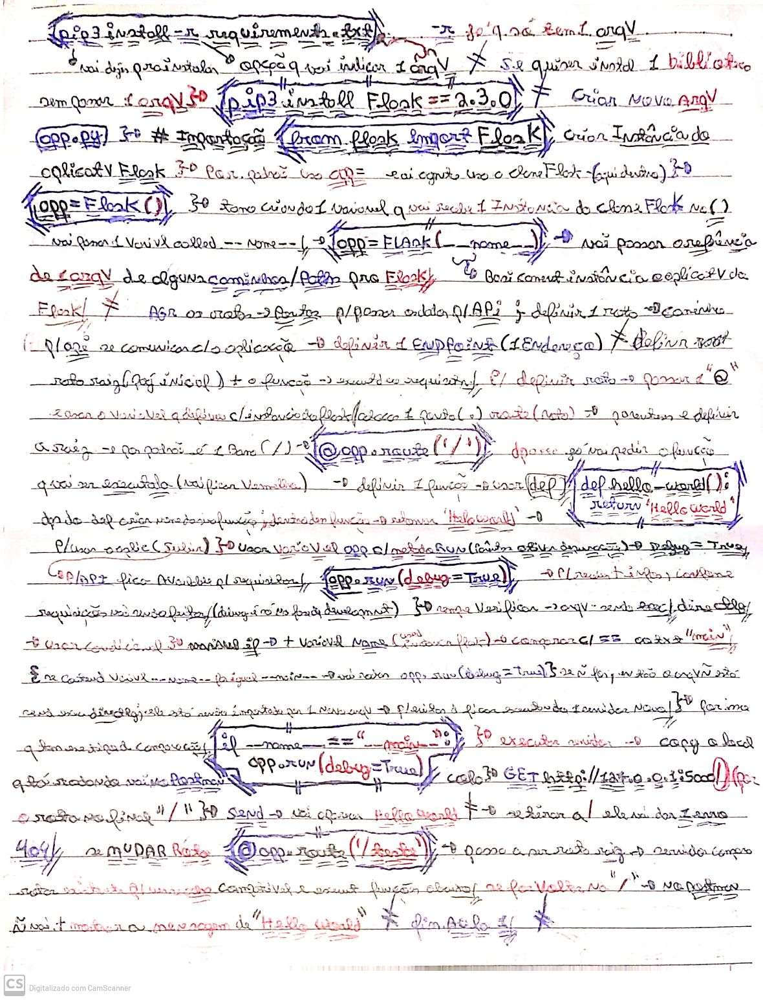

Anotações:
Free tier, nível gratuito. AWS free tier(Google), cadastro -> tem q ter cartão de crédito.. tela - CONSOLE-> da p/ fazer config do terminal no console.
AWS CLI-> intalação pelo Windows.. intalação concluída -> pode abrir o terminal.
Terminal não vai deixar alterar -> tem q ter autenticação, p/ poder fazer configs. Qlq suspeita.. pode revogar essas credenciais
Ir no IAM -> CREATE USER. Nome(user) e senha.
Set Permissions -> dar acesso a um user. Dar mínimo de acesso p/ alguém, se precisar pode aumentar.
Acesso de Adm, CRIAR. CREATE ACESS KEY ou CREATE SECRET ACESS KEY(essa n tem como recuperar se perder -> tem q deletar e criar nova). Copy a acess key.
Colar a acess key no terminal, EB CLI-> lista de comandos(focada p/ o Elastic Beanstalk) -> digit EB CLI(Google) -> intalar -> clickar no link => vai ir pro GitHub-> vai ter documentação, pode copiar, ou, abrir no terminal do Git-> abrir terminal e dar 1 Gitclone..
Rodar Python com EB CLI installer->
cd aws-elastic-beanstalk-cli-setup-master
ls
cd scripts
ls
python3 ebcli_installer.py
eb --version
criar arquivo application.py
"#criar pasta EB-API
#Criar arquivo: 'application.py' e 'requirements.txt'
# EB-API/application.py:
#from flask import Flask
#application = Flask(__name__)
#@application.route('/')
#def Ceia():
# return 'Hoje tem Santa Ceia'
#if __name__ == "__main__":
# application.run(debug=True)
# EB-API/requirements.txt:
# Flask==2.3.0"
Deploy:
aplicação e o ambiente.. 1 aplicação pode ter vários ambientes(comum)
terminal:
eb init -p python-3.11 api-flask --region us-east-1
criar o ambiente virtual(comando terminal):
eb create flask-env-dev
api já vai ta rodando lá
vai ter as infos da api, os logs, a saude..
como finalizar:
terminal:
eb terminate flask-env-dev
mudar nome da aplicação no arquivo..
não pode ser app.py -> tem q ser application..
trocar onde tem app -> p/ -> application
rodar, -> new terminal -> eb init -p python-3.11 ecommerce-api--region us-east-1
eb create api-dev
abrir:
eb open api-dev
já daria p/ acessar
trocar postman '{baseUrl}' -> API Ecommerce DEV
criar rota no começo, ants do login
@application.route('/')
def initial():
return 'API up'
eb deploy api-dev
p/ matar a api:
eb terminate api-dev
Notes(pictures)
